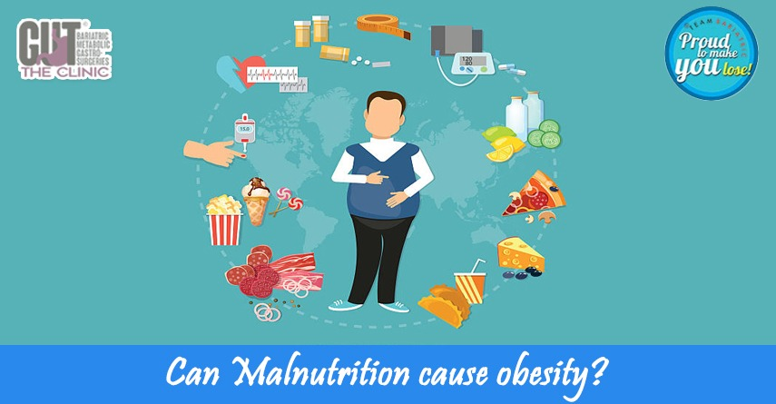

How Malnutrition Can Cause Obesity: Insights from Top Bariatric Surgeons
Obesity is a multi-factorial disease; it simply means that, no single cause which can be solely attributed to it. It is also well known that scientists do not know exactly what exactly causes weight gain. Often, we all see people who can eat whatever comes their way and they still remain thin. With the exception of these lucky few, we are programmed to gain weight with age.
According to top bariatric surgeons, it is a matter of the balance between what you eat, and how much you spend. If we consume calorie-dense food regularly and don’t burn those extra calories, we are likely to gain weight. But can malnutrition cause obesity?
Surprisingly yes.
Obesity Surgeons who treat obese teens know that children who were underweight at birth are prone to gain too much weight in their childhood and adolescence. Children who faced food shortages during famines later on developed abdominal obesity, the classic Indian Subcontinent profile of thin people with paunch, the so-called thin- obese in medical jargon. As we know that the tummy fat or abdominal obesity is the medically worst. This fat is the harmfully active type that leads to diabetes, heart disease, and cholesterol disorders, the so-called metabolic syndrome.
Malnutrition means not eating right; right food at the right time. People who starve for too long to lose weight are initially successful in losing some weight, but complex hormonal reactions result in weight regain, overshooting the earlier weight. This is known Yo-Yo dieting. Secondly, prolonged fasting slows down our metabolism and stops losing further weight, and starts regaining on the same diet. We tend to lose more muscle mass than fat during the starvation phase and fail to regain our muscle back. So with each dieting cycle of malnutrition, we lose more and more muscle mass and gain more fat.
Starvation or fasts followed by eating calorie-rich low protein food ultimately results in further weight gain and obesity. The best bariatric surgeons know well from their experience that protein-deficient diets after bariatric surgery are counterproductive in the long run and patients may end up regaining all their weight.
Malnutrition can really make us obese.
Still confused that malnutrition can cause obesity? Visit us at Smart Cliniqs and learn more about obesity.
Back to Blog